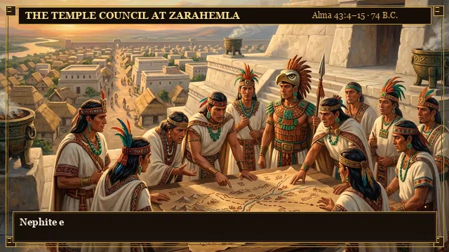

✦
WAR COUNCIL OF THE NEPHITES · RECORD OF MORONI
Alma 43: At the River Sidon · c. 74 B.C.
📜 THE SACRED RECORD FLOW
⚔ ANCIENT WARFARE TECH TREE

I. THE TEMPLE COUNCIL AT ZARAHEMLA
Alma 43:4–15
WAR COUNCIL AT THE TEMPLE PLATFORM
"Nephite elders and captains gather atop the white limestone temple platform..."
STRATAGEM: Tracking Lamanite host across stretched deer-hide parchment map.
SACRED CHRONICLES (ALMA 43)
I
Temple War Council
Deer-hide map & limestone pyramid
II
Moroni & The Standard
Rent coat on spear & bronze armor
III
Scouts in the Canyon
Observing unclad 40,000+ host
IV
Plates of Brass & Armor
Alma's prayer & forged tech
V
Ambush at River Sidon
Riplah ridge & Manti temple
VI
Sacred Codex & Warfare
Screenfold bark & brass plates
ANCIENT AMERICAN DEFENSIVE TECH
Quilted Cotton Armor
Ichcahuipilli
Multi-layered woven cotton soaked in brine, quilted in diamond patterns. Deflects slashing cimeters and flint arrows (Alma 43:19).
Hammered Breastplates
+3 Defense
Beaten sheets of bronze and copper protecting the chest and vital organs. Preserved Nephite lives in close combat (Alma 44:9).
Arm-Shields & Headplates
Bucklers
Curved cedar wood bucklers covered in cured leather and fastened to the arm, allowing warriors to advance under heavy fire (Alma 43:19).
Timber Pickets & Earthworks
Fortifications
Ditches cast up round about, topped with pointed timbers higher than a man's stature to foil sudden raids (Alma 48:8).
Plates of Brass
Sacred Intel
Inquired of through the prophet Alma to discern enemy troop movements and divine stratagems (Alma 43:23–24).
▶ AUTO-PLAY CHRONICLES
◀ PREV
NEXT ▶
🔁 REPLAY SCENE
🔊 SACRED FOLEY: ON
⚔ TO BATTLEFIELD